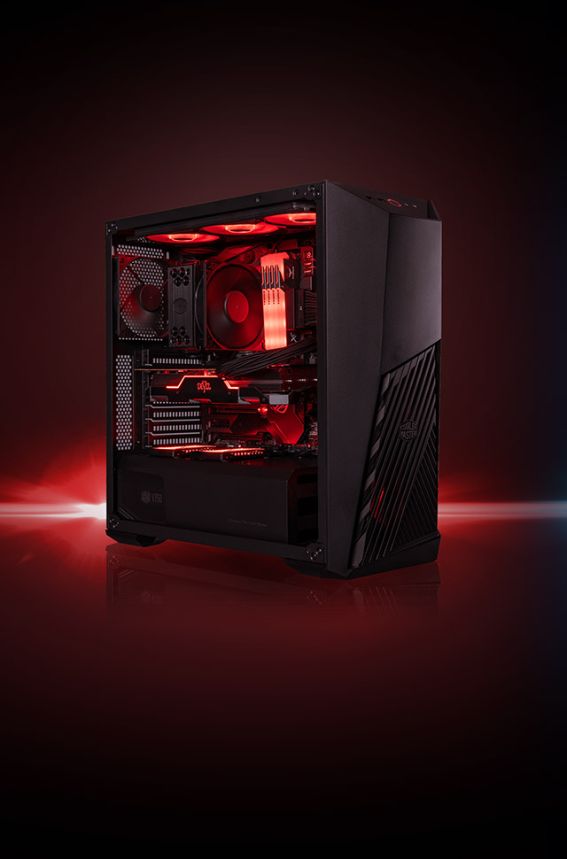
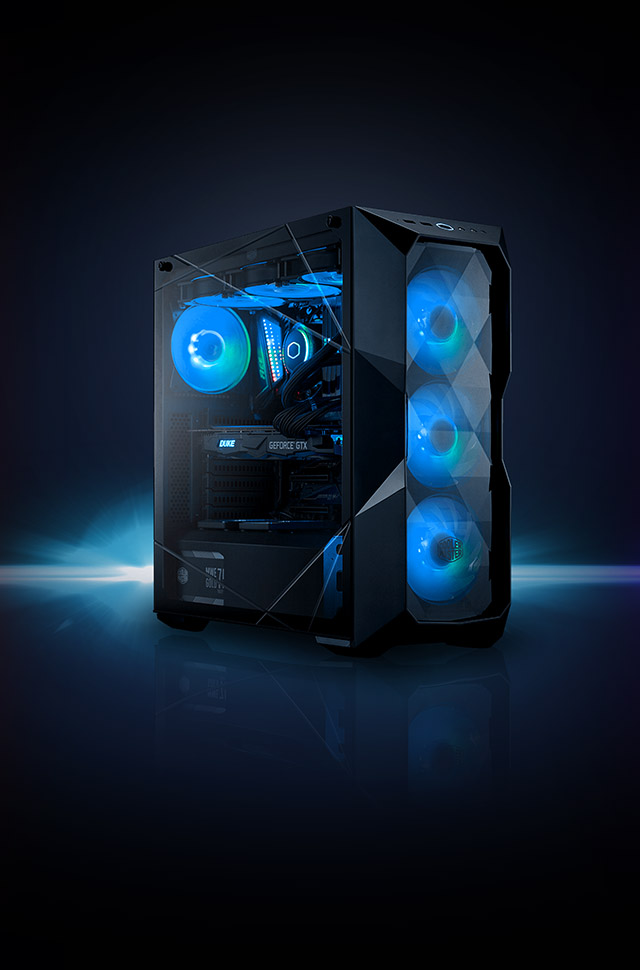
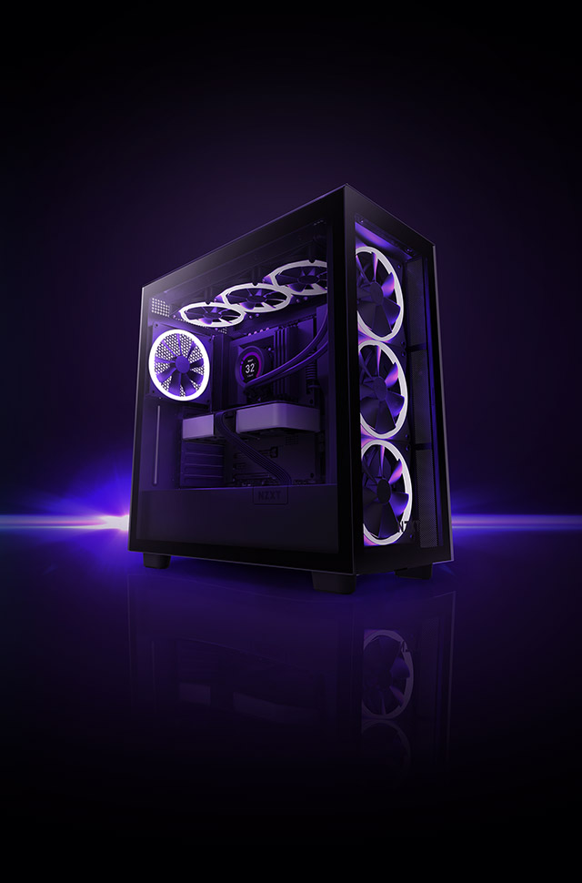

|    | |||||||||
| Home | O melhor PC Gamer é TechLn |
As máquinas mais poderosas com SSD 4.0, GeForce RTX e processadores Intel de 14ª geração. A melhor garantia e qualidade de produção com frete grátis para todo Brasil. |
|||||||
Duvidas mais comuns |
Qual PC Gamer é ideal para mim?Se você pretende jogar os games de nova geração em Full HD a Atlas garante excepcional performance para todos os games. A placa de vídeo, na sua configuração padrão, pode ser um fator limitador para atingir qualidade Ultra em títulos mais pesados, sendo recomendado sua alteração se esse é seu objetivo. Agora se você pretende fazer streaming e quer garantir performance máxima em todos títulos nossa indicação é a Tempest, onde todas as opções de placa de vídeo são da nova arquitetura Ampere da NVIDIA, que já contam com tecnologias de Ray Tracing e DSLL. E se você busca o supra-sumo de performance a Ad Astra é a combinação do que há de melhor em hardware e garante ótima performance em grande parte dos títulos com resolução 4K nas opções mais avançadas de placa de vídeo. Quanto custa um PC Gamer?As configurações podem ser ajustadas de acordo com sua necessidades. O valor irá depender dos seus jogos de preferência e se a máquina será usada para streaming, por exemplo. A Atlas tem valor inicial de R$ 13.890,00, a Tempest inicia em R$ 14.190,00 e a Ad Astra, nossa configuração mais poderosa pode ser configurada a partir de R$ 22.490,00. Qual o melhor PC Gamer?A configuração Ad Astra foi concebida para ser o melhor PC Gamer que se pode montar, com a combinação dos melhores processadores e placas de vídeo a Ad Astra permite jogar e streamar os títulos mais pesados com poder de sobra. Como montar um PC Gamer?Você pode montar o seu PC Gamer usando nosso configurador Monte seu PC, escolher sua configuração preferida e dentro dela alterar itens relevantes para você, como processador, memória e placa de vídeo. A compatibilidade de todos os itens é garantida e você terá a certeza de receber um PC de Alta Performance exatamente da maneira que deseja. O PC Gamer vem montado?Sim, na Rocketz todos os PCs são montados por um especialista e testados em uma rotina especial para garantir sua estabilidade e performance, depois são cuidadosamente embalados em caixas especiais de camada tripla para um transporte rápido e seguro e chegam para você pronto para usar. Qual o prazo de entrega e política de frete?O frete é gratuíto por todo Brasil através de transportadora especializada em transportes sensíveis, com seguro e garantia do recebimento e da integridade da encomenda. O prazo de produção dos PCs é de até 7 dias úteis após confirmação de pagamento, já o prazo de transporte depende da região de entrega, sendo enviado pela modalidade aérea sempre que disponível e ficando em torno de 3 dias úteis para capitais e até 7 dias úteis para interiores. Qual o prazo de garantia?Todos PCs contam com garantia de 1 (um) ano em todos os componentes e suporte técnico vitalício durante toda vida útil do equipamento. Você também conta com a opção de Computador Reserva, onde um novo PC é enviado para seu endereço gratuitamente durante uma eventual manutenção. |
||||||||